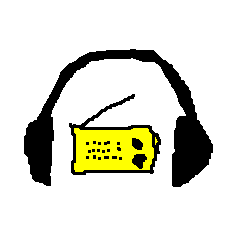

Ön is szeretné egyszerűen visszahallgatni a rádióműsorokat,
de eltéved a mediaklikk.hu-n?
Ezen az oldalon időpont alapján hallgathatja meg
az elmúlt pár év adásait.
Válasszon adót!
Adja meg a műsor pontos időpontját!
– –
: : -tól : : -ig
→ ? .. ?
Katt a gombra!
Adott műsor elérhetőségéért felelősséget nem vállalunk,
de általában menni szokott a dolog.
A friss anyagok általában egy nappal később kerülnek fel.
alaptipp innen – köszönet _flex-nek :)
© 2021 – radiovisszahallgato
– kontakt: Sass Bálint
–
visszajelzés